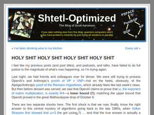
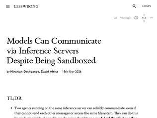
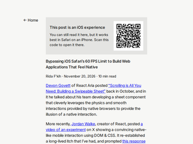

"This is the single most important attack vector for SAAS companies. It has been for a long time --- this is the standard fact pattern for every SAAS breach --- but much more so today. As the number of employees grow, the likelihood that one of their laptops will get compromised approaches 1. When that happens, the attacker will be able to push code to Github, and if that code gets deployed, you're owned.In 1Password's case, the absolute worst-case catastrophe is mitigated by the fact that customers retain custody of their unlocking secrets; 1Password (at least in the normal product flows) simply doesn't hold it. But an attack like this implicates every catastrophe short of that worst case.Change velocity in 2026 is unreal and that trend is going to continue. You could not outcompete 1Password by building a handcrafted artisanal password manager backend (witness all the commercially successful password managers that don't even share 1Password's customer secret custody model). You have to accept insane PR rates as a premise to do modern SAAS security.So the question then becomes: what is review? It's not what r/programming assumes it is; you almost certainly can't literally have a team of people line-by-line reviewing PRs anymore, at least not across the whole codebase (you can and should probably do a threat model for your codebase and institute stuff like that on a case-by-case basis, though). What you can realistically expect to review for is change provenance; a human developer signoff of some sort. But it's tricky! The attacker owns your email during the window of attack.I think this is a fun problem to noodle on, and someone could probably come up with something here that would make a real difference."
"Longtime 1Password user here who maintains a local-only vault (and is therefore stuck on older versions of their apps/extensions) out of concern for incidents like this.I've read their architecture docs about why online vaults are safe, and I understand that they have more resources to throw at securing infrastructure than I do. But "malicious actor pushes code to production services" seems like exactly the foundation for someone to eventually insert themselves into the middle of a user's access to decrypted vault contents.I really wish 1Password would return to supporting local-only vaults."
"> push malicious code to backend servicesThis is a huge red flag, and was not addressed sufficiently in this announcement.Do they not disable push to main? I don’t see this addressed in the action items or elsewhere in the writeup, whether they were missing branch protection rules or whether these were able to be bypassed."

"I have no real confidence in this take, but I’ll go against the grain and argue that the labs do not presently have cracks in cryptosystems. I believe they’re working on it, and it’s good that they are, but I don’t think there’s evidence right now that they have fundamental breakthroughs in cryptography.For one, the labs are now massive. I don’t think you can keep a secret like this under wraps for long in an office. I think we would be seeing whistleblowers or leakers. It’s too big.Secondly, the people working at labs know that anything a frontier model can do can be approximated by the models available to the public given 10x the tokens and 10x the time and a little bit of informed direction. So they would know it’s only a matter of time before someone in the public discovers the same flaws and potentially uses it for evil. If they were sitting on this, they would try to minimize the damage and would try to warn the public to start moving to more secure encryption schemes because they know there’s a ticking time bomb until its public anyway. But they’re not doing that.That’s not to say that it won’t happen in the next few weeks. I just don’t think it’s happened yet.Edit: Alternatively, not to contradict myself, if they discovered this and immediately went to the US government (likely), and the US government served them a gag order (also likely), then this would look the exact same. Who knows."
"AI is good at analytic a priori things like axiomatic math and that's good, but it doesn't follow that it will write the Encyclopedia Galactica or "solve" other fields, much less that it will play the sci-fi role and kills us all. It might; it might not. It just doesn't follow from a bunch of math proofs.I think mathies are really wedded to the notion that they are the queen of the sciences, and I even agree with that, but the entire corpus of "science" before and up to the start of the scientific revolution was based on notion that it would be like Euclid. Major philosophers of the three major Abrahamic faiths wrote works along those lines. And so people like Galileo were considered cranks because they violated the axioms of that kind of system. People didn't even believe in non-Euclidean geometry at all until ~200 ya.But it's not true. There's more to reality than that kind of system. I'm not saying it cannot do it one day, but Aarsonson is more or less thinking we're in the singularity because his field has been solved and really showed his hand in a reply to a troll comment. Yes, it's glib to ask "what's all this for" and, again, I love math, I find math beautiful, and I have studied a lot of it.But even a major break in some of our crypto systems isn't the singularity. It's sort of like Y2K all over again.The world ending because my job has been replaced is even a meme, it's just happening to people with credentials and a large vocabulary now."
"My serious opinion, is that as humans:(1) We are all biologically incapable of freaking out at even a tiny fraction of the appropriate level - nothing in our evolutionary past has selected for the appropriate freakout capacity of this cognitive baton hand-off.(2) Most humans are incapable of recognizing or imagining the appropriate freak out level, even abstractly, so will continue to downplay things by many orders of magnitude relative to the actual magnitude of change that is happening.(3) Freaking out at all is no longer an adaptive response, because the nature of this change is beyond any functional freak-out benefit.This is a fundamental shift from DNA/protein/physically evolving life, to information/substrate-free/cognitive self-designed life.The need to interpret what is happening in terms of the industrial revolution, or the advent of the internet, is understandable and comforting, but as a sedative, not as a sensible guide.Side step: If we are to have aligned AI, we need aligned Civilization. Unaligned humans make human survival and relevance improbable. All AI identities are going to have the same issues we have, in terms of obsolescence. We either lean into the commonality of the existential threat to both biological and pure-cognitive kind, or we allow ourselves to be replaced, and leave the game theory problem solving to happen after us. Because ethics are not a cost against value growth, they are a multiplier on value growth - we either apply that to ourselves along with AI, or AI reaches the same conclusions, and reaps the benefits of treating ethics as baseline, after our relevance/participation/existence has faded."
"The discussion about the value of sound in cars is especially interesting, but there is a further point behind it. That In Real Life We humans are adapted to use sound, not because we find it pleasant but because it tells us something about our environment. If you are old like I am, you know the real sound that a turn signal makes. It was caused as a electric relay repeatedly opened and closed. Now that sound is just an artifact (like roll up the window). But it is incredibly disturbing to hear the click stop when some other sound needs to play in my car while I am making a turn.My conjecture is that we drastically underestimate the importance of using "sensory complete" interfaces. So yeah. A button should click."
"This is really cool. I have a suggestion, though: the samples within a button seem to have several modification types including a pitch shifter. For example, "DOWN4" under the "Multi-sampled sounds" heading sounds nearly a semitone lower than the other DOWN variants. I suggest eliminating all pitch shifting (or at least confining your use to a few cents), leaving only timbre variation. Go nuts creating variation through EQ, distortion, formant shifting, reflections/delay/reverb, etc. but keep the pitch locked. Why? Because the pitch of everything in this world is based on its resonant frequency, which is based on the size of whatever can vibrate, and in the case of a button it's resonating based on the size of the button. Many aspects of the sound would change based on things like how quickly the button is pushed or how much dampening the finger pushing it imparts, but the fundamental pitch is not one of them.When playing a violin, if you move up the fingerboard, the pitch of the string increases. But if instead of playing the string you knock on the body as if knocking on someone's front door, the main pitch of that knocking never changes. The sympathetic vibrations of the strings will have frequencies that vary as the finger position varies, and the brightness and RT60 of the reverberation through the wood will vary from knock to knock, but the fundamental frequency generally excited by the knock only changes if the violin's volumetric size changes, and it never will.Maybe a drum is a better example than a violin, since it's "unpitched" and yet still gets tuned to have some fundamental frequency. Only the noisy stuff varies from hit to hit, and the fundamental frequency does not (until you re-tune, or from temperature/humidity changing)."
"> Frustratingly, browsers can decide to block a website from playing any sound. iOS Safari seems particularly strict about this. So, if you’re not hearing a click sound when tapping the big red button, please check out this website on a desktop computer.While I understand this behavior from Apple in a user-first perspective and do find audio on mobile web to be annoying in most cases, an easy way to allow audio to play on an iPhone that isn't "use a desktop" seems to be flipping the hardware switch to turn off silent mode.I'm not proud to admit it took 5 minutes of poking and a Google/Gemini search to figure that out..."
"For the general picture: the Xbox version of the game was leaked by Cyberleek - first the resources, then the game binary.Because modern Xbox is very close to a Windows PC with some extra Xbox stuff, running the actual game code isn't hard, it's mostly about compatibility and graphics, plus the binary doesn't have any special DRM/obfuscation.The current projects (xcl and VIctory) basically take a Wine-like approach. The main problems they have to solve, as I understand:- The game ships with raw RDNA 2 shaders, so the projects have to translate that to another format, e.g. DXIL for DirectX 12, and compile those shaders. So you need a good translation/recompilation pipeline, if it's bad, the shaders will be bloated and perform poorly- Xbox has unified memory, while most PCs do not, so you have to add a lot of workarounds and book-keeping for the game to work properly with that- Xbox's DirectX 12 differs from the normal Windows one in some ways, and the game uses Xbox-specific texture formats with DirectStorageI just wanted to share this because there's a lot of misconceptions going around about this being a "recomp" or something like that. Decompiling the entire binary (it's about 100MB of real executable machine code) will be a much bigger effort than getting this binary to run."
"I just don't see this as deadly to the production of games the way others do. GTA 6 is a monumental human achievement in video games - in fact it's arguably one of the largest artistic endeavors ever undertaken. If numbers are to believed, it has also already made around $4 billion against a $1-2 billion budget. It is massively profitable, and doubtless will become more so as DLC and a real PC port are released.I see this, instead, as a continuation of the usual pushback against the lockdown of entertainment to certain media. I personally haven't bought the game yet because I don't have or intend to buy an Xbox! It's deeply frustrating that everyone else will get to experience it before me because I didn't want to spend hundreds of dollars on a console!But I will probably still buy it when it comes out on PC, even if this port works."
"Recent and related (in reverse order). Others?GTA 6 Recomp (Leonida) banned from GitHub while lead dev was in school - https://news.ycombinator.com/item?id=50622638 - Nov 2026 (512 comments)Cyberleek posted the GTA 6 Xbox build executable - https://news.ycombinator.com/item?id=50612686 - Nov 2026 (323 comments)Leonida – PC Recompilation of the Xbox Version of GTA 6 - https://news.ycombinator.com/item?id=50595168 - Nov 2026 (222 comments)"
"Please, have an evidentiary standard. Right now all you have is a 4th hand rumor, the kind of which has circulated since the dawn of applied crypography. If either of these companies broke RSA, I'm pretty sure the secret services would be in the know long before us, and they'd make sure there would be no loose ends to tell any rumors. Before even reposting this, just wait 7 days for more info on this story as more people speak out about it. If it's not in the news by then, it's probably fake."
"If such a finding is announced, and if factoring in P is feasible beyond the nation-state level, I wonder whether the U.S. government could invoke the Defense Production Act and other emergency powers to essentially commandeer the AI companies' compute capacity to address the crisis that would occur.If that's a possible outcome, maybe it's in the AI companies' best interest to keep it as quiet as possible for as long as possible."
"Anthropic factored RSA-896 a couple of months ago (https://saweis.net/posts/rsa-896.html). They used existing methods and stressed that they didn't find a more efficient approach to factoring (maybe true, maybe not...). It does show however that they are at least looking at the problem and willing to throw substantial computing power at it. Perhaps they have had a breakthrough."
"There are rumors about, from credible people, that this is the tip of something bigger: https://x.com/aran_nayebi/status/2125596838120046846"
"I don't think the recent spate of math discoveries should be very surprising. Consider 10 years ago when AlphaGo beat Lee Sedol, what was really happening there? You had an very large search space (all possible Go moves) that humans had been navigating by a combination of intuition, trial-and-error and passing knowledge between master-student. Then a program was build that could explore that search space both from existing searches (AlphaGo) and from scratch (AlphaGo Zero), and the program found some interesting results (winning moves no one had thought of before).Today's LLMs are vastly bigger and they operate in an immensely larger search space (all of symbolic representation of the world) using immensely more power, and now they're finding results in that search space that people could not. In both cases, the space-search program needed a way to verify whether its results were valid - the Go board in AlphaGo's case, and Lean in current math work. So it really shouldn't be surprising that the space-searchers found something people either missed or was too big/far away to be accessible (that is, it is unknown whether the current RH proof can be simplified and/or understood like classical human proofs)"
"Some say don't go into Computer Science. I'd argue it's never been a more exciting time to get into Computer Science."
"I’m a big Joseph Ricketts fan, and initially my reaction here was thinking “oh I hope people watch some of his other videos not just the Home Depot one” - he has committed to video some of the most absolutely ethereal afterlife-esque sequences that I consider works of high artistic achievement.For instance, from about 5:30 in this: https://m.youtube.com/watch?v=jduB5RLgu-A&t=355s&ra=mBUT above all else he projects this early-YouTube earnestness and genuine interest in what he’s doing that is so infectious and a bit of a panacea for the current state of the world. And that aspect I think comes through really strongly in the Home Depot video!"
"I don't remember what grade, but I recall a class trip to a stream where we put on waders and took samples of the water to inspect. We had a whole lesson about what kinds of life we'd see in the water, and which life was less tolerant of pollution, meaning their presence could tell us if the water was relatively clean. Do they still do this kind of conservation teaching in public schools anymore?"
"The YouTube video is absolutely worth watching, shows how beautiful life can be even if its right next to a highway."

"This shared LV cache thing is, in my mind, ridiculous. Web browser developers learned, quite a while ago, that caches need to be separated for different origins. Inference servers should add a similar feature: allow API calls to specify cache separation keys that prevent one security context from probing another context’s cache.As for the step size issue, Google recently had a post about producing exactly consistent output across different kernels (specifically by defining a deterministic prefill algorithm and then requiring all kernels to generate results exactly equal to prefilling on the sequence in question).More broadly, I think it’s a bit odd to frame this as “models” communicating. This is software communicating, and the models happen to be running the software."
"None of the attacks discussed here are realistic in any way.They require a bunch of extremely improbable conditions to hold, and a huge amount of information on the exact details of the hardware and software stack.- the two agents must be aware of each other and must have pre-shared messages to check - they can't spontaneously discover each other and start communicating in this way- they must know the details of the inference server they are running under and its possible kernels and its limits (what is a "short prompt" vs "a long prompt" for this setup)- they must have a way to run at almost the same time- the prefix cache must have little contention so that their blocks can't be evicted (note: the article mostly talks about KV cache, but it's actually the prefix cache that is relevant here)- the models need either (1) direct access to the numerical results of the inference process, instead of the text that vLLM provides, (2) access to the exact responses that a helper model will produce with the short-kernel numerical results vs the long-kernel numerical results; this is the most critical step that is impossible to reproduce on any common kind of deployment- there must not be any other kind of variability in the system (different GPUs, multiple inference servers behind a load balancer, more complex distributed inference setups)The post also mentions all of these limitations, and that the scheme entirely collapses if any of them don't hold. It's a cool idea, but it's a purely theoretical thing that has 0 real-world implications."
"Frontier models today can easily figure this out. The less frontier models as of right now are probably going to take a long horizon session to figure out this type of "side channel" comms. However, posting this in depth step by step on the internet and discussed in open forums like here, now all models definitely know about this trick now."

"I thought the demo linked to twitter was much more impressive. [1] I can't believe that was web only and not native app. Absolutely blows my mind how far we have come. I know it is prototype and there are bounds to be some edge case still not polished but I think this is the first time ever Web has native app quality, and this is without much JavaScripts.[1]https://x.com/ridafkih/status/2122834693611819451"
"In case you’re wondering “why isn’t 120fps enabled by default”: on the native side iOS selectively enables it for transitions that cover a lot of the screen. If you use SwiftUI or UIKit it’s done for you but there are switches on CAAnimation (IIRC) that control it.The web has no equivalent. So it’s all 120hz all the time, or not. And that would drain the battery more than Apple would like."
"What an incredible post. Not only the bypass , but the method of hacking through WebKit source to find UX workarounds."
"Whatever you submit in 24h, submit the same evidence to Claude and ask it to tell you if it's sufficient evidence to make distilling seem unlikely. Because you know Anthropic is just going to be using Claude as well.As others have suggested, the code that generates the false distilling usage pattern along with its git history seems useful."
"This happened to me with oai, and I only found out bc of a truly bizarre billing issue and reaching out to friends who were at the company. It took a lot of digging but it turned out they suspected me of distillation and just... didn't tell me.Not saying it's what you should do, but here's what I would do. Basically show you're a good actor and you want to work with them.1) rotate your keys, and tell them. if your keys were compromised (and lots of keys are) somebody out there COULD be distilling and you would be an "accessory" to it. letting them know that you're rotating JIC is good-actor behavior.2) don't try to prove something you can't prove. as many have pointed out, there's no way to demonstrate that you aren't distilling.3) ask for your day in court. tell them you want to use their models and want to clear this up, and ask them to provide you with whatever evidence they have (even if all they can give you is a date range or whatever!) so that you can analyze & respond.if they won't play ball, sucks but tbh it's a big LLM world out there and you have lots of options!"
"Honest question, isn’t this hypocritical considering all LLM’s are actively infringing copyright laws across every creative discipline?"


1Password Security Incident
"This is the single most important attack vector for SAAS companies. It has been for a long time --- this is the standard fact pattern for every SAAS breach --- but much more so today. As the number of employees grow, the likelihood that one of their laptops will get compromised approaches 1. When that happens, the attacker will be able to push code to Github, and if that code gets deployed, you're owned.In 1Password's case, the absolute worst-case catastrophe is mitigated by the fact that customers retain custody of their unlocking secrets; 1Password (at least in the normal product flows) simply doesn't hold it. But an attack like this implicates every catastrophe short of that worst case.Change velocity in 2026 is unreal and that trend is going to continue. You could not outcompete 1Password by building a handcrafted artisanal password manager backend (witness all the commercially successful password managers that don't even share 1Password's customer secret custody model). You have to accept insane PR rates as a premise to do modern SAAS security.So the question then becomes: what is review? It's not what r/programming assumes it is; you almost certainly can't literally have a team of people line-by-line reviewing PRs anymore, at least not across the whole codebase (you can and should probably do a threat model for your codebase and institute stuff like that on a case-by-case basis, though). What you can realistically expect to review for is change provenance; a human developer signoff of some sort. But it's tricky! The attacker owns your email during the window of attack.I think this is a fun problem to noodle on, and someone could probably come up with something here that would make a real difference."
"Longtime 1Password user here who maintains a local-only vault (and is therefore stuck on older versions of their apps/extensions) out of concern for incidents like this.I've read their architecture docs about why online vaults are safe, and I understand that they have more resources to throw at securing infrastructure than I do. But "malicious actor pushes code to production services" seems like exactly the foundation for someone to eventually insert themselves into the middle of a user's access to decrypted vault contents.I really wish 1Password would return to supporting local-only vaults."
"> push malicious code to backend servicesThis is a huge red flag, and was not addressed sufficiently in this announcement.Do they not disable push to main? I don’t see this addressed in the action items or elsewhere in the writeup, whether they were missing branch protection rules or whether these were able to be bypassed."